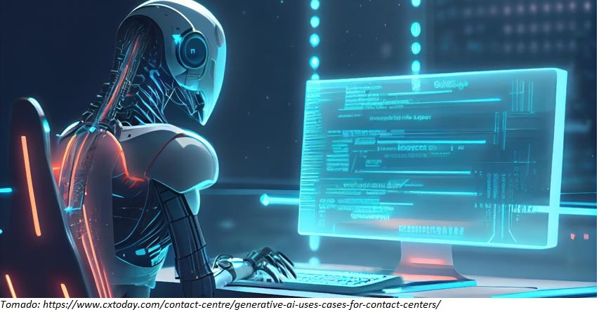

Bienvenido a mi página web dedicada a la fascinante mundo de la inteligencia artificial. La IA es una de las tecnologías más emocionantes y transformadoras de nuestro tiempo, y aquí quiero compartir mi entusiasmo y conocimiento sobre este campo apasionante.
La inteligencia artificial abarca desde el aprendizaje automático y el aprendizaje profundo hasta la visión por computadora y el procesamiento del lenguaje natural. Cada avance en IA nos acerca un paso más a solucionar problemas complejos y a mejorar la vida de las personas en todo el mundo.
"La inteligencia artificial no es solo una tecnología, es una pasión que impulsa la innovación y el descubrimiento".
En esta página, encontrarás:
- Artículos y tutoriales sobre conceptos clave de la IA.
- Noticias y novedades en el mundo de la IA.
- Proyectos prácticos y ejemplos de aplicación de IA.
- Recursos educativos para aprender y crecer en este campo.